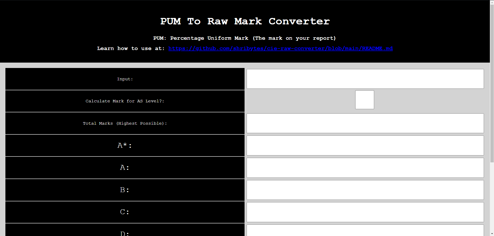

LearnKey CertificationsDuring my schooling, I have obtained many LearnKey certifications, these show my technological abilities and knowledge of various aspects of computer science and information technology. These include:
|
CIE Raw Mark ConvertorVisitThe CIE Raw Mark Convertor is a tool that takes your CIE mark, along with grade thresholds to return the actual number of marks an indivudal has received.I decided to make this after realising that learning my raw marks could be benificial for my own knowledge, however the formula needed to do so (alhtough not difficult) requires many steps. Through the site, I am able to calculate the marks faster for myself and others within an accuracy of 1 mark. |
 |